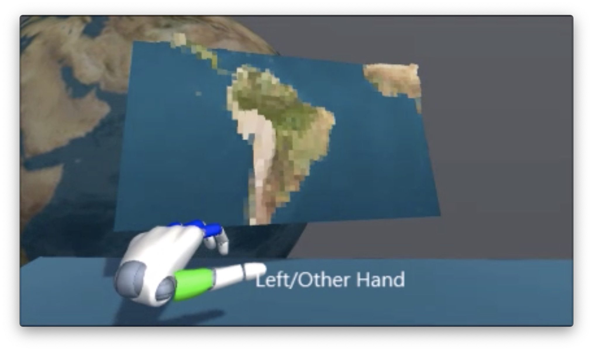
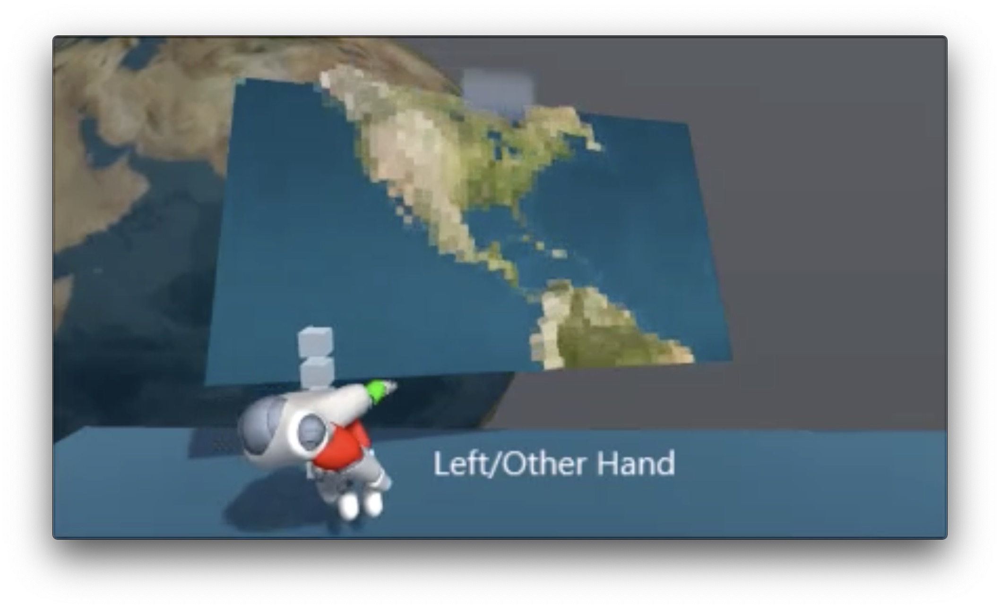
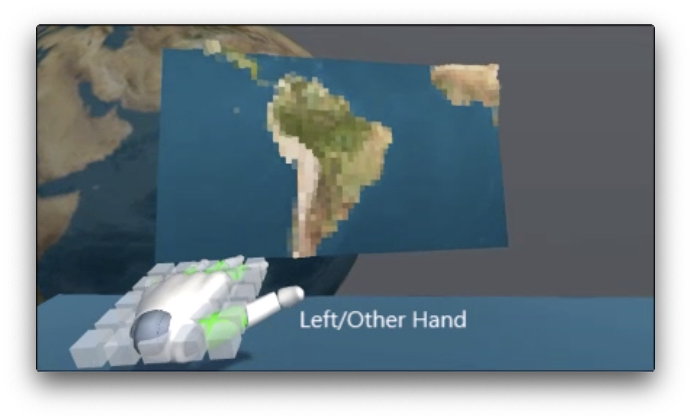
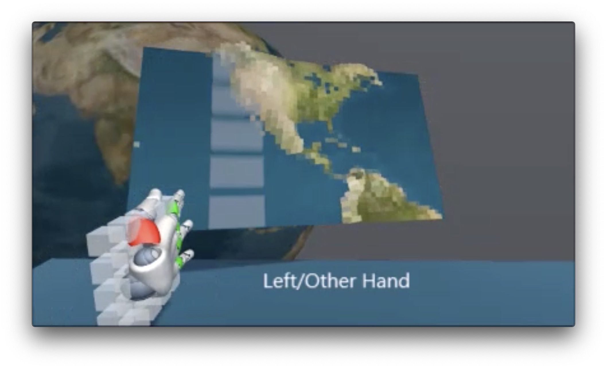
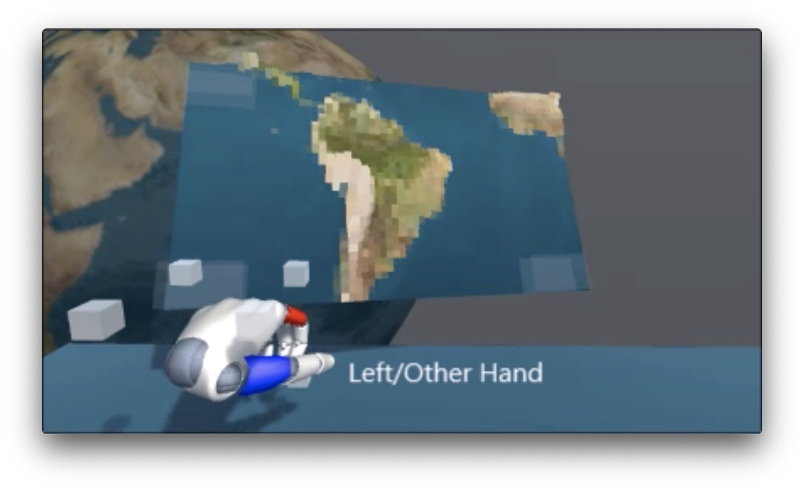
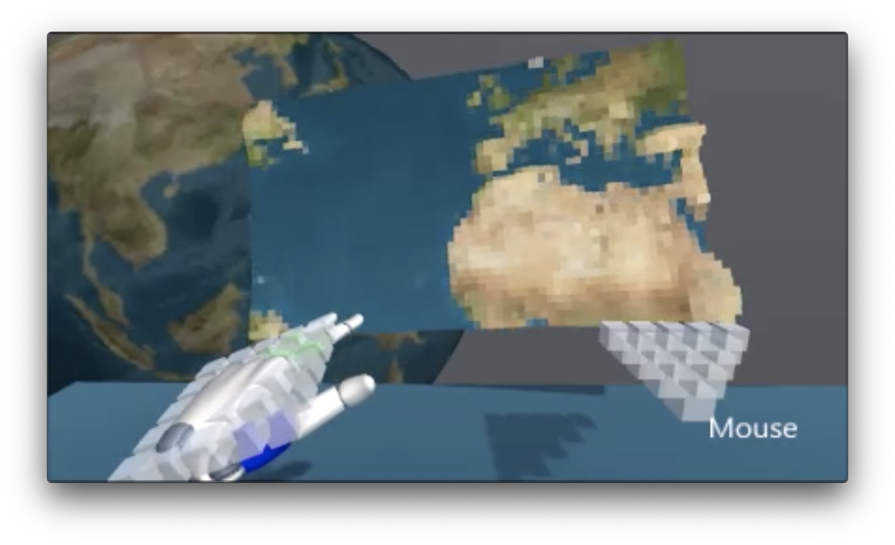
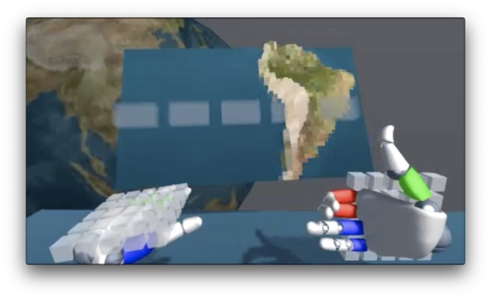
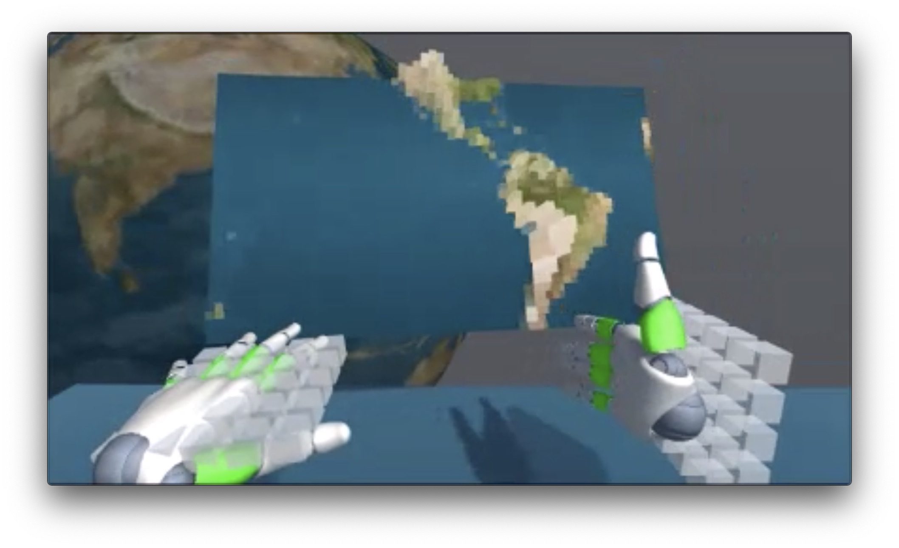
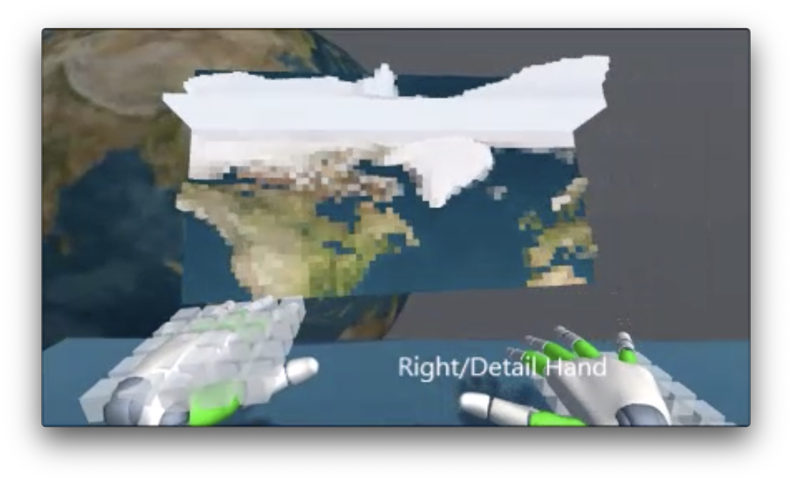
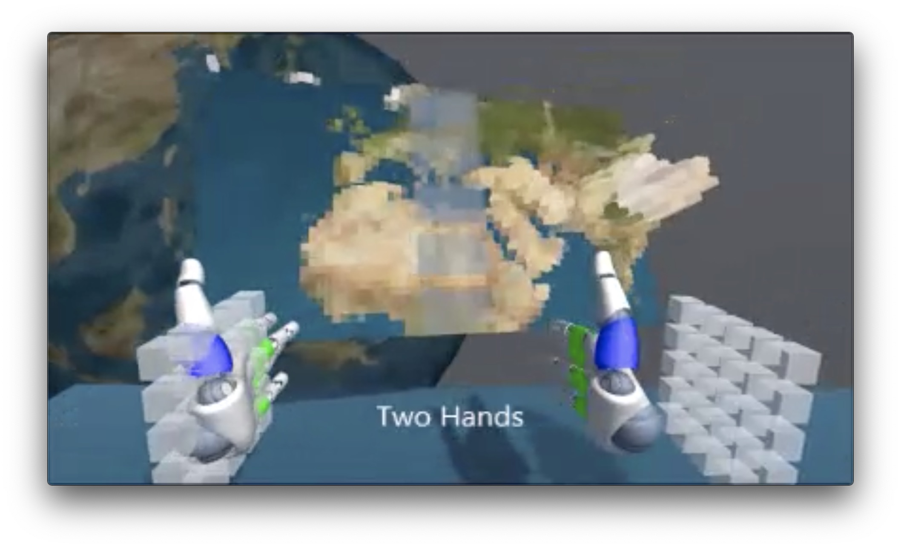

Core hand gestures needed for common 2.5D and 3D user interface actions: idling, pointing and scrolling (with selection usually by touch or tap gesture); each pose is identified by it's muscle contraction-or-protraction signature (how the wrist muslces are flexing the hand). The poses can be used while operating a mouse with the other hand, or in conjuction with shared gestures such as zoom in or out.
Demo video and article originally posted 5/5/2015. Hand pose chart illustrated 8/20/2020. - Lewey Geselowitz
Above Demo Video: YouTube or video:
the colors on the fingers represent the protraction state of each finger (protracted-back / relaxed-forward / contracted-in).
The block shape around the hands represent the current cursor state (see hand poses above).
Table of hand poses with images, muscle signature, and UI action
The six hand poses: Open, Flat, Pointing, Row, Column, Closed.
Hand Poses
#
Pose
Image
Muscles
Action
Comments
1
Open

Neither contracted nor protracted
Idle
No action taken
2
Pointing

Index protracted, ring and pinky contracted
Aiming/Zooming-Z
For focusing on a specific point
3
Flat

All protracted, palm down
Rotate / Depth Scrolling
Tilts view and/or pans up/down.
4
Row
Palm to the inside, palm fingers not protracted
Row Scrolling
Scrolling up and down, fingers tips used for detail.
5
Column

Palm to the inside, palm fingers protracted
Column Scrolling
Scrolling left and right.
6
Closed

All contracted
Resets
Used as an escape
Two Handed Combinations
3 + 0
Rotate w/ Mouse

All protracted, palm down
Rotate * Mouse
Held for rotation
3 + 4
Rotate * Scroll Row

Both Rotate and Row poses
Rotate * Row Scrolling
Scrolling up and down, fingers tips used for detail.
3 + 5
Rotate * Scroll Column

Both Rotate and Column poses
Rotate * Column Scrolling
Scrolling left and right, fingers tips used for detail.
3 + 3
Zoom / Scroll Depth

Both hands fingers protracted, palms down
Adjusts depth or zooms in/out
Raises or lower the target
5 + 5
Zoom / Scroll Column

Two Column and Column poses
Column Zooming
Zooming in and out, fingers tips used for detail.
*Biases towards rotate pose: Using your non-dominant hand to rotate and hold a reference space is so vital an activity that the rotate state should be deeply biased towards once it has been initiated by the user.
Demo built using Unity 3D and the Leap Motion sensor and SDK. (with finger protraction and hand pose recognition added).